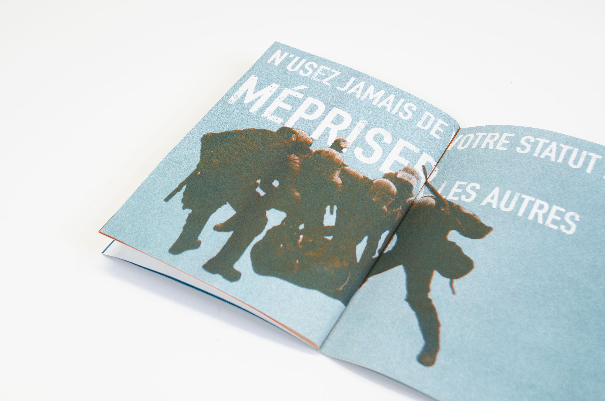
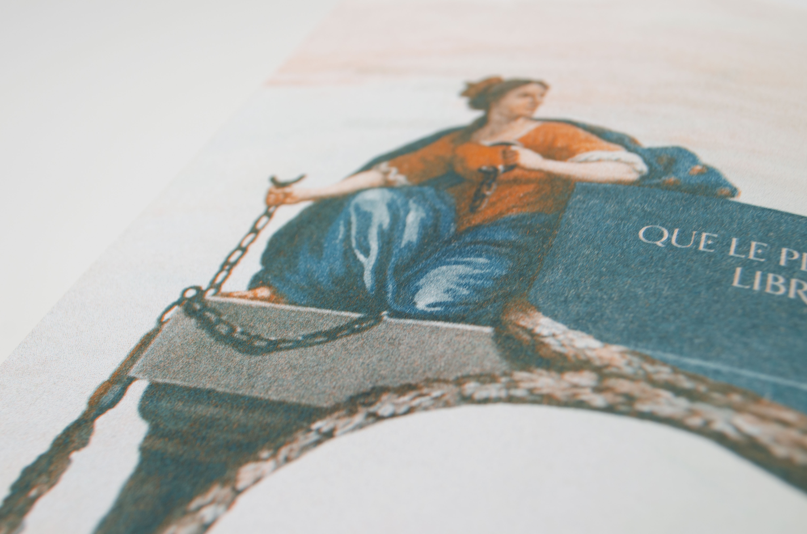
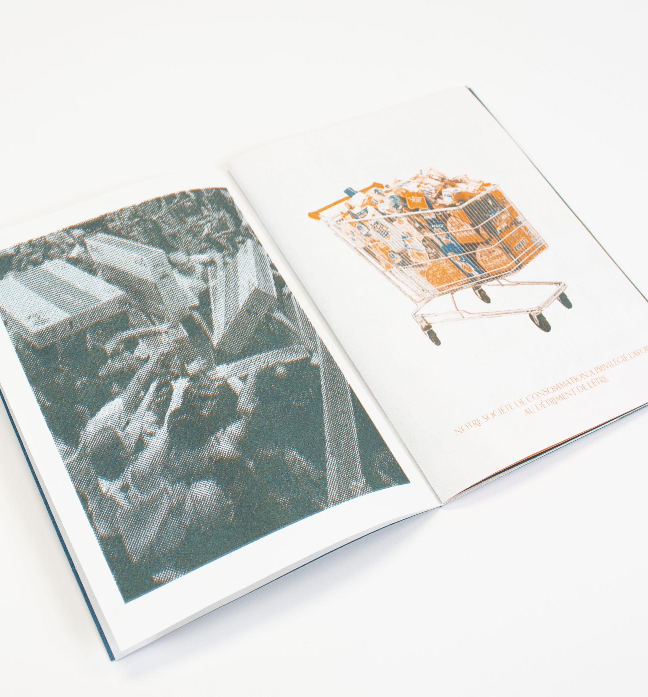
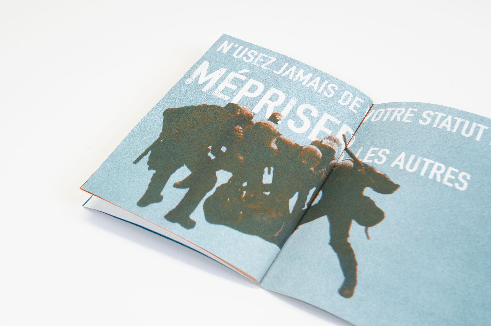
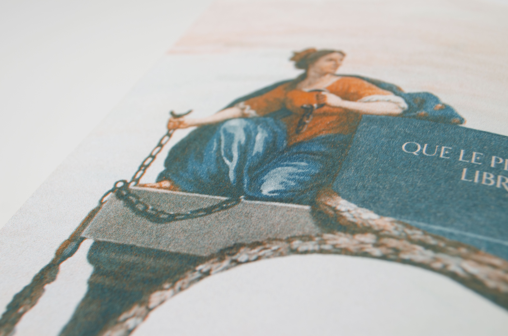
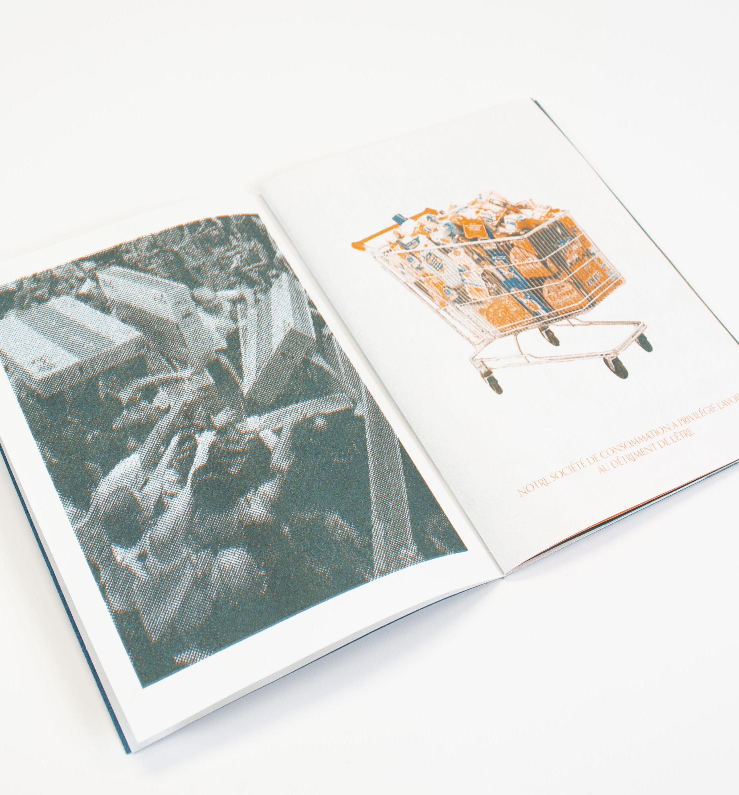

Réalisation d’un fanzine
Impression en Risographie d’un fanzine. Celui-ci se base sur le principe du Golden Record, à savoir un disque envoyé dans l’espace faisant un « portrait » de l’humanité, à destination de potentielles vies extraterrestres. Ce fanzine dépeint certains fléaux humains et met en lumière ce que le Golden Record a volontairement omis de représenter. Il met en garde les civilisations extra-terrestres et les dissuade de reproduire les mêmes erreurs que les Hommes. Chaque double page a pour thème un fléau humain, illustré par des photomontages et des textes.
 




